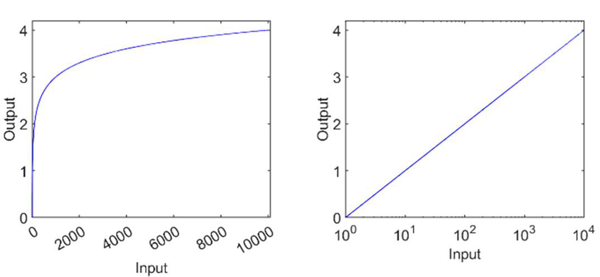
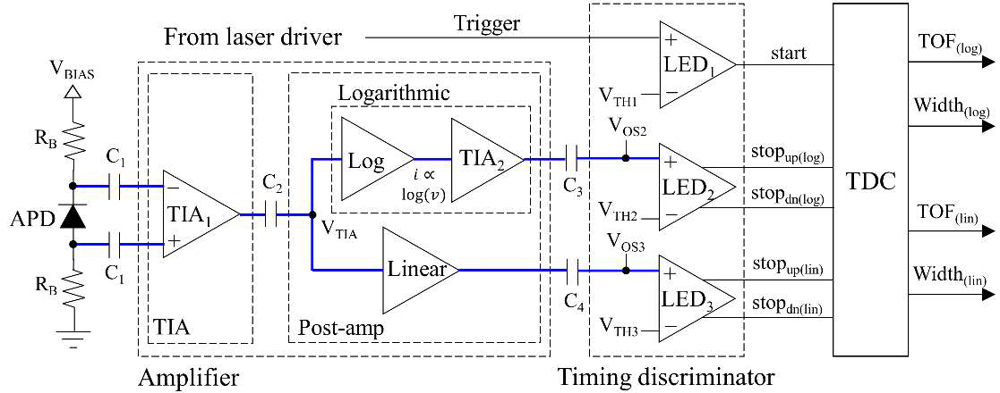
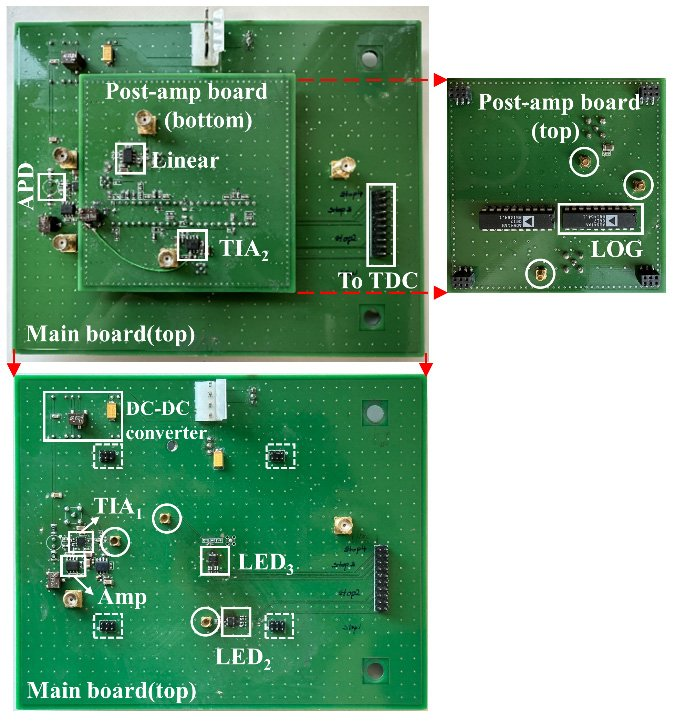
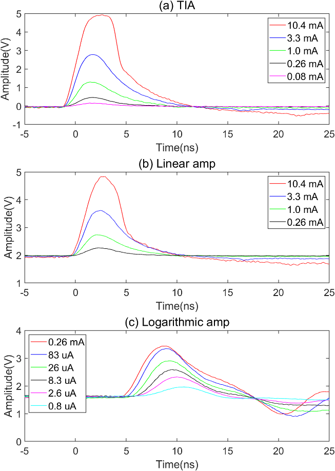
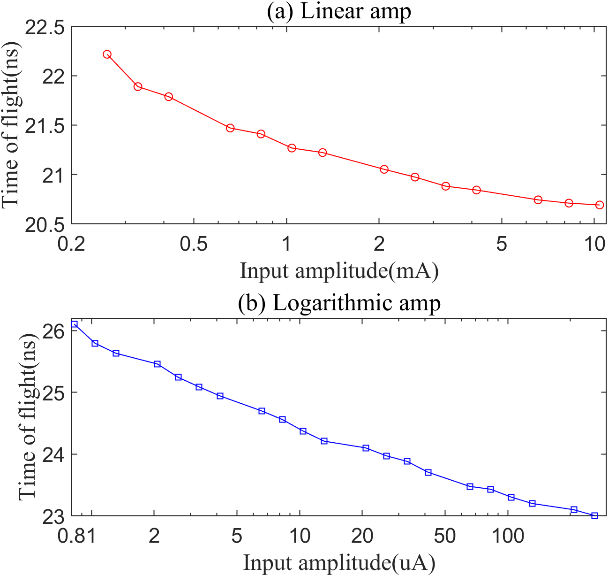
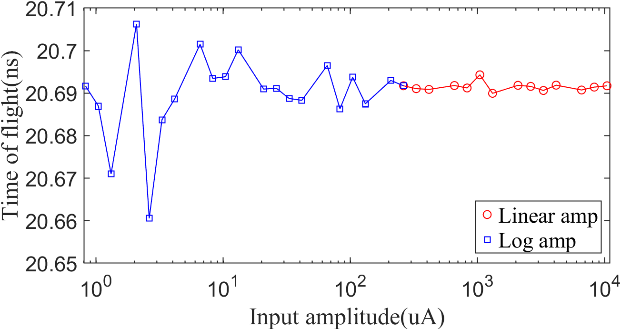

TL;DR한 줄 요약
작은 신호는 크게, 큰 신호는 작게 키우는 로그 증폭기와 아주 큰 신호를 맡는 저이득 선형 증폭기를 나란히 붙여, 라이다 수신 신호를 82 dB 범위에서 포화 없이 처리하고 펄스 폭 하나만으로 타임워크를 46 ps까지 보정했습니다.
ABSTRACT초록
자율주행 차량이 주변 물체를 정밀하게 감지하려면, 세기가 크게 다른 수신 신호의 도달 시간을 정확히 측정해야 합니다. 이를 위해 선형 증폭기와 로그 증폭기를 결합한 펄스 ToF(Time-of-Flight) 라이다 수신 회로를 제안합니다.
타이밍 판별기는 입력 범위가 좁습니다. 그래서 큰 신호는 포화되지 않도록 낮은 이득이, 작은 신호는 검출되도록 높은 이득이 필요합니다. 로그 증폭기는 작은 입력에 높은 이득, 큰 입력에 낮은 이득을 자연스럽게 제공해 넓은 입력 범위를 좁은 출력 범위로 압축합니다. 여기에 저이득 선형 증폭기를 더해, 상용 로그 증폭기를 포화시킬 만큼 큰 신호까지 처리하도록 동적 범위를 넓혔습니다.
그 결과 넓은 입력 범위에서 과도한 포화가 발생하지 않고, 하나의 시간 영역 특징(펄스 폭)만으로 안정적인 타임워크 보정이 가능합니다. 대신 회로 복잡도는 늘어납니다. 개별 소자로 제작한 시제품을 82 dB 동적 범위에서 실험 검증했고, 측정한 펄스 폭으로 보정한 뒤 타임워크는 46 ps였습니다.
PROBLEM왜 어려운가
펄스 ToF 라이다는 레이저 펄스를 쏘고 반사되어 돌아오기까지의 시간으로 거리를 계산합니다. 수신 신호가 정해진 문턱 전압을 넘는 순간을 도달 시간으로 잡는데, 신호가 클수록 문턱을 일찍 넘습니다. 같은 거리라도 신호 세기에 따라 측정 시간이 달라지는 이 오차를 타임워크(time walk)라고 합니다.
- 거리 2~100 m, 반사율 0.25~1 조건에서 수신 신호 세기는 약 80 dB까지 차이가 납니다.
- 반면 일반 증폭기가 포화 없이 다룰 수 있는 범위는 약 38~40 dB입니다(최소 검출 50 mV, 최대 출력 4 V 가정).
- 범위를 넘는 신호는 증폭기를 과도하게 포화시키고, 출력 펄스가 실제보다 넓어져 보정이 불안정해집니다.
KEY IDEA핵심 아이디어
타임워크 보정에 필요한 것은 신호 세기에 대한 선형성이 아니라 단조성입니다. 세기가 커질수록 펄스 폭이 꾸준히 커지기만 하면 보정할 수 있습니다. 그래서 출력을 정확히 비례시키는 대신, 로그 함수로 넓은 입력을 좁은 출력에 압축하는 방식을 택했습니다.

① 차동 TIA
APD에서 나온 전류를 저잡음으로 전압 변환합니다. 포화를 막기 위해 트랜스임피던스를 270 Ω으로 작게 잡았습니다.
② 로그 증폭기
약 200 mV 이하의 작은 신호를 담당합니다. 5단 리미팅 증폭기로 50 dB 범위를 처리합니다.
③ 저이득 선형 증폭기
200 mV~7 V의 큰 신호를 0.6배로 감쇠한 뒤 처리해 32 dB 범위를 추가로 확보합니다.

IMPLEMENTATION구현
개념 검증용 시제품을 개별 소자로 제작했습니다. 메인 보드에는 APD, TIA, 타이밍 판별기를, 포스트앰프 보드에는 선형·로그 증폭기를 배치했습니다. 주요 부품은 TIA ADA4857, 선형 증폭기 AD8009, 로그 증폭기 AD641입니다. 실험은 905 nm 레이저(30 W)와 가변 ND 필터로 수신 세기를 바꿔 가며 진행했고, 시간 측정에는 단발 분해능 20 ps rms의 TDC를 사용했습니다.

RESULTS주요 결과
82 dB 범위의 신호 중 작은 쪽 50 dB는 로그 증폭기가, 큰 쪽 32 dB는 선형 증폭기가 과도한 포화 없이 처리했습니다.

타임워크 보정 전과 후
보정 전에는 신호가 작아질수록 측정 시간이 늦어졌습니다. 선형 증폭기 구간(32 dB)에서 1.525 ns, 로그 증폭기 구간(50 dB)에서 3.10 ns의 타임워크가 있었습니다. 두 증폭기 모두 펄스 폭이 입력 세기에 따라 단조 증가했고, 이 펄스 폭으로 보정한 결과 전체 82 dB 범위의 타임워크가 46 ps로 줄었습니다. 거리로 환산하면 1 cm 미만의 오차입니다.


선행 연구와 비교
| 연구 | 구현 | 동적 범위 | 타임워크 | 타이밍 지터 | 보정 방식 |
|---|---|---|---|---|---|
| 본 연구 | 개별 소자 | 82 dB | 46 ps | 146 ps | 펄스 폭 |
| [20] 2022 | CMOS 65 nm | 80 dB | ~2 ns | 116 ps | 선형 근사 |
| [26] 2020 | CMOS 0.35 µm | 94 dB | ±100 ps | 180 ps | 불필요 |
| [27] 2022 | CMOS 0.18 µm | 96 dB | ±160 ps | 560 ps | 불필요 |
| [30] 2021 | CMOS 0.35 µm | 91.1 dB | ±75 ps | 1.7 ns | 펄스 폭 + 기울기 |
논문 Table II에서 발췌. 지터는 각 연구의 최악 조건 기준이며, 측정 조건이 연구마다 다르므로 직접 비교에는 주의가 필요합니다.
한계와 향후 과제
개별 소자로 구현해서 소비 전력이 IC 기반 연구보다 높습니다. 로그 증폭기 출력은 상승 시간이 길고 잡음이 커서, 가장 작은 신호(SNR 약 22)에서 지터가 146 ps까지 커집니다. 포화를 막으려고 트랜스임피던스를 작게 잡은 탓에 입력 환산 잡음(284 nA rms)도 큰 편입니다. 향후에는 지터를 줄이고 동적 범위를 더 넓히는 것을 목표로 합니다.
CITATION인용
@article{moon2026readout,
author = {Moon, Chanhui and Gim, Jeong Rok and Lim, Hansang},
title = {Readout Electronics of a Pulsed Time-of-Flight LiDAR Combining Linear and Logarithmic Amplifiers for a Wide Dynamic Range},
journal = {IEEE Transactions on Instrumentation and Measurement},
volume = {75},
pages = {2004211},
year = {2026},
doi = {10.1109/TIM.2026.3712932}
}